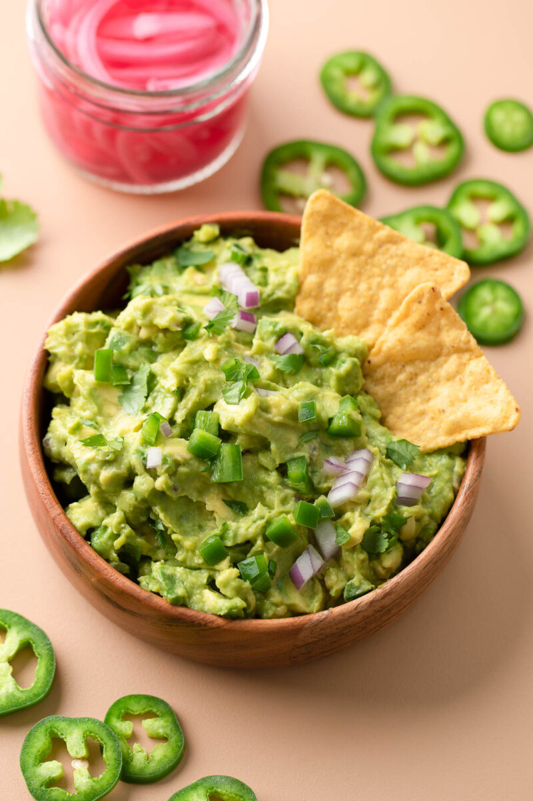

Spicy Guacamole

Description:
Guacamole is basically it’s own food group around here and this jalapeño studded Spicy Guacamole is quick, easy, and forever a crowd pleaser!
Ingredients:
- 3 ripe avocados
- 1-2 jalapeño peppers
- ¼-½ cup finely diced red onion
- 2-3 TBSP chopped fresh cilantro
- 1 small lime, halved
Spicy Guacamole Seasoning:
- ½-¾ tsp ground cayenne pepper
- ½ tsp garlic powder
- ½ tsp ground cumin
- ¼ tsp salt to taste
Steps:
- To make the seasoning blend, combine the spices in a small bowl and mix.
- Slice each avocado in half, remove the pit, and use a spoon to scoop out the avocado from each peel.
- Add avocado to a medium bowl and fork mash until desired consistency is reached. You can make this guac as chunky (or smooth) as you'd like!
- Next prep the jalapeño(s). Remove the stem and slice in half. For a spicier guacamole, leave the seeds intact. For a mild guacamole, use a spoon to scoop out the insides of each half of the pepper. If you want your spice level somewhere in between use the cayenne pepper and seeds to perfectly spice your dip. Finely mince jalapeño. If you haven't already. finely dice ¼-½ cup of red onion.
- Add onion, jalapeño,, 2 TBSP chopped fresh cilantro, and juice of half a lime to the bowl along with the homemade seasoning blend.
- Mix and dive in with a tortilla chip to taste test. If you'd like, add the juice of the remaining half of the lime and any additional salt, cumin, cayenne, and cilantro your heart desires. Enjoy!